1925—Millinery
by Jane Loewen
CHAPTER I—WIRE FRAMES
INTRODUCTION
The making of wire frames comes first in the many steps involved in hat construction because the original mold for any hat or hat frame is made of wire. Therefore, wire frames are made the subject of our first chapter.
For practical beginner's work, however, a wire frame is a very poor first lesson, as they are difficult to make until the student has learned to manipulate millinery materials. The wise plan is to have the students familiarize themselves with Chapters I and II by reading only and to begin actual hat construction with pattern frames, Chapter III.
Students who have only a brief millinery course and short class periods for a few semesters should not attempt wire frames. They are, however, very necessary for anyone who means to make much of millinery or to train for professional work.
I. USES OF WIRE FRAMES
WIRE FRAMES FOR MOLDING
Wire frames always suggest transparent hats, but to the milliner their greatest importance is for workroom use as molds over which to stretch handmade frames (see Chapter II).
The designer of original models shapes the wire frame. A maker usually prepares the frame ready for the shaping and edge wire and braces it with brace wires tied at very close intervals. After the designer gives the outline and the maker ties in the brace wires, it is ready for the frame material to be stretched over it or to use as a model for braid sewing.
If a French hat or any model hat of rolled or irregular brim is to be copied, a wire frame is made first. A wire headsize is made with long brace wires (see section III of this chapter). This wire headsize is slipped inside the hat headsize and the wires bent back over the hat and shaped exactly like it. The edge wire may be tied on to the cross braces and enough round brace wires tied on (but not cut) to give the exact shape of the hat.
Care must be exercised not to get the wire frame larger than the hat because the willow or elastic stretched over it is naturally a little larger than the wire frame when finished.
A willow or elastic net frame stretched over a wire frame made in this way will give more exact duplication of a shape than any other frame can.
1. Elastic molded over a wire frame. Elastic net makes a soft frame with a good deal of body to it and is desirable for stretching turbans, small frames, and medium brims. There is no other frame material which is so soft and yet holds its shape so well.
2. Buckram molded over a wire frame. Buckram makes a much stiffer frame, one which will stand a great deal of handling in the making. While it is easier for the amateur milliner to handle, it will break more easily when worn than will an elastic net frame, and is never so comfortable as a softer frame.
There are two grades of buckram, one rather heavy grade which is commonly sold when one merely asks for buckram, and a much lighter grade called jockey buckram. Jockey makes a good frame on which to sew straw braid. It makes a good foundation for velvet and any material with a nap. If crêpe, taffeta, or satin is used on a stretched buckram frame, an interlining must always be used or the hat is hard-looking.
3. Willow molded over a wire frame. Willow, when a good quality can be obtained, is the most satisfactory material for stretching large and irregular brims. It really is a two-ply or double-frame material. One ply of it is a fine, lightweight crinoline. The other is a pliable weave of willow fiber. The two materials are sized (or starched) and dried together. The willow gives stiffness, the crinoline gives it body.
The better grades of willow are made in Switzerland and France. During the war none was imported to America. The only thing obtainable was a much inferior quality which came from Japan.
It is still almost impossible to get the better grade of willow. In many workrooms milliners have given up trying to use the Japanese quality, and elastic net or one thickness of elastic net and one of cape net are used instead. The Japanese use a quality of fiber which is either so brittle that it breaks under the most careful handling or so soft that the frame will not hold its shape.
WIRE FRAMES FOR TRANSPARENT HATS
The fewer round braces that can be used for a transparent hat the softer and more attractive looking it will be. A sprung-steel edge wire makes a truer outline and eliminates the need of round brace wires (see Figure 3).
1. Frames for transparent lace hats. Transparent lace hats are divided into two classes according to the edge finishes used.
Soft extended lace edges. The finished edge of the lace from which the hat is made is extended beyond the edge wire, giving an irregular and draped effect. For this type of hat the edge wire must be wrapped (or wound) with maline as a finish and as something to sew to. The brace wires are also wrapped unless a ma-line underfacing is used (see Chapter IX, section II).
Fold edges of fabric. A bias fold of velvet, soleil, silk, or maline is sewn to the frame edge. This may be extended beyond the edge wire, giving a soft edge, or it may be turned back over the top of the hat in a more tailored fashion.
In either case an underfacing is used and the wires need not be wrapped.
2. Frames for transparent maline hats. The wire frame for a soft or shirred maline hat is made in the same way as one for a soft lace hat (see Chapter IX, section II).
The wire frame for a fitted maline hat (see Chapter IX) must have more braces than one for a soft hat.
When maline is fitted on a wire frame, more braces are necessary to keep the maline from falling out of shape between the wires.
If a fitted-fabric edge flange is used, frame net or crinoline must first be fitted in place (see Figure 48, Chapter IX).
3. Frames for hair-braid hats. Wire frames for transparent hair hats need a number of round braces, but not so many as for a stretched frame. In a medium-sized brim braces one inch apart are sufficient. For an irregular-shaped brim the braces must outline the curves of the hat, or the braid will make an ugly line.
Edge wire for hair hats should be wrapped with maline. This gives a foundation to which the first row of braid may be sewn.
WIRE-FRAME USES TO BE AVOIDED
The following "don'ts" will be invaluable in making wire frames.
Never sew any except hair or transparent braid over a wire frame, as a wire frame braced sufficiently to hold braid will be heavier than a pressed frame, and wire headsizes are never so comfortable.
Never fit velvet over a wire frame, as the wires make a mark or mar on the velvet, which is ugly. The effect is never smooth. The headsize is never comfortable. The edge finish is always bulky.
Never try to use a factory (ready-made) wire frame for really fine use, for the wire is always a poor quality, the outline of the edge wire is bad, braces are used where there is no need for them, and are omitted where they are needed, and the crowns are of an ungainly shape. There are very few times when it is desirable to use a wire-crown foundation for a transparent hat.
II. MATHEMATICAL SIDE OF FRAME MAKING
MATHEMATICAL PRINCIPLES INVOLVED
Most girls feel that the time spent on geometry is wasted. Millinery is an outstanding example of the practical application of geometry. Certainly one may make a hat without having studied geometry, but a knowledge of circles, lines, and angles helps one immensely in frame construction and in cutting and fitting.
Theoretically, the back and front brace wires are one straight line forming the diameter of a circle, which is the edge-wire circumference. So, too, are the brace wires from side to side and from side front to side back.
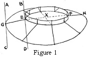In the illustration, Figure 1, wires GE and FH extended across the headsize of the frame (dotted line EF) make the diameter of the circle.
In frame construction, the same mathematical rules may be applied to a wire frame as to a circle. The edge wire is a circle with the center cut out for a headsize. Point X, the line of intersection, is the center of the circle. The braces form radii and diameters.
MATHEMATICAL ACCURACY
Measures for wire frames must be absolutely exact if the hat is to be professional in appearance and becoming in line.
In a perfect frame a tangent drawn on the circle (the headsize and edge wires) at the point of intersection of the diameter (the brace wires) forms a right angle with the diameter. See lines BC and AD. That is, the brace wire must slant on a true right angle straight from the headsize to the edge. If it is slanted to either side of the perpendicular, the given measures will be wrong and the edge wire pulled out of shape.
ENLARGING OR REDUCING DIMENSIONS
Either of these processes can be performed without destroying the correct proportions.
In geometry the rule is that pi × the diameter of a circle equals the circumference. In a wire frame one brace wire equals a radius or two brace wires as line GH equals the diameter. So pi (3.14159+) × 2 × the brace wire drawn from point X equals the edge wire.
The edge wire is always given by the designer when she shapes the frame. The puzzling part is to make the frame larger or smaller and have the edge wire so exact that the slant of the brim will not be lost.
1. A larger edge wire. If a frame is to be made ½ inch larger all around, 1 inch is really added to the diameter, ½ inch on each end of the diameter or each side of the hat—mathematically speaking, ½ inch on each radius. So pi, or 3.1+, × 1 inch = the amount added to the circumference = 3.1+.
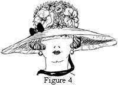In the dimensions given for the hat in Figure 4 the edge wire is 44 3/8inches. If the hat is made ½ inch larger all around, the edge wire will be 44 3/8inches + 3 1/16+ = 47½ inches -. One-half inch will be added to each brace wire.
If a frame is to be made one inch larger, two inches are actually added to the diameter, one inch at each end.
Then pi (3.1+) × 2 inches = the amount added to the edge-wire circumference = 6.2 + inches.
For the hat in Figure 4 an added inch all around the edge wire will be 44 3/8 + 2 × 3½ (pi) = 51 3/8 inches.
2. Smaller edge wire. To make a frame smaller is a matter of subtraction instead of addition. To make a frame ½ inch smaller, subtract ½ inch from each brace wire (1 inch on the diameter) and subtract pi × this difference (1 inch) in diameter from the edge-wire circumference.
3. Larger headsize. When the headsize must be larger and the edge wire is left the original size, the brace wires are changed. A headsize is also a circle and the rule of pi × the diameter still holds good.
In the case of the edge wire, the changed diameter or radius measure is given.
In the case of the headsize, the measure for the changed circumference is given: that is, the headsize needs to be a given amount, 1 inch or 2 inches larger. So the brace wires must be shortened.
The 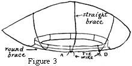headsize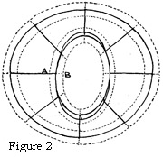 is a circle within a circle and the rule is inverted (see Figure 2, headsize lines A extended to B). When a 25-inch head-size is to be made 1 inch larger (26 inches) the difference in the braces is the difference in circumferences or headsizes 1 inch (26 - 25 = 1) ÷ pi (3.1+) = 1/3 inch +. Each brace wire is made 1/3 inch less.
4. Smaller headsize. When the headsize must be smaller the edge wire is left the original size; the brace wires must be longer to reach to the smaller inner circle (see Figure 2, lines A extended to B).
When a 25-inch head-size is to be made 1 inch smaller (24 inches) the difference in the braces is the difference in circumferences or head-size. 1 inch (25 - 24 equals 1 inch) ÷ pi (3.1+) = 1/3 inch + . Each brace wire is made 1/3 inch longer. The rule is the same as for making a headsize larger; but when the head-size is made smaller, length is added to the brace wire to make it reach the smaller inner circle.
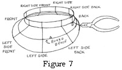III. PROCESS OF CONSTRUCTING A WIRE FRAME FOR HAT (FIGURE 7)
Figure 7. Here is given the exact placement of the straight braces and the round brace wire used for some maline hats and for fitted flanges. Note the placement of the pliers in pinching the wire horizontally before flattening it vertically.
-
CORRECT ORDER OF RECORDING MEASUREMENTS
- Top headsize—24½ inches
- Lower headsize—25 inches
- Front—2¾ inches
- Back—1 1/8 inches
- Left-side front—3 3/8 inches
- Right-side back—2½ inches
- Left side—4¼ inches
- Right side—4¼ inches
- Left-side back—2½ inches
- Right-side front—3½ inches
- Edge wire—44 3/8 inches
The above order of recording measurements is used uniformly among good workmen. Note that the dimensions opposite each other on a line are correspondingly opposite one another on a frame when assembled. Frames have usually eight braces. A frame with many curves, or one used for molding net and willow frames, may need more which can be added between the regular braces. Their length is gauged by the edge wire after it has been fastened to the regulation eight braces. Hence these extra braces rarely need measurement.
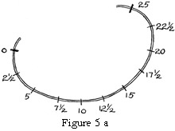GETTING CORRECT HEADSIZE
Twenty-five inches is the average headsize for unbobbed hair. For bobbed hair twenty-two inches is the average size. To obtain a correct headsize measurement, pass a circle of wire around the head just where the headsize of a hat rests on the head. Allow 1/8 inch for the space taken up by the underfacing of the hat and the headsize lining. Allow the circle to lap 2½ inches and tie each end of the wire with a tie wire wrapped twice around and twisted tightly and cut. Make the upper of the two headsizes ½ inch smaller than the lower one, the lower being the one measured. To change headsize measurement see subdivision in this chapter on enlarging or reducing dimensions.
Figure 5a. Marking the Headsize Wire. Points 0 and 25 tap when the ends are tied to make the headsize oval.
GEOMETRICAL PRECISION REQUIRED
The following steps are to be taken with exactness.
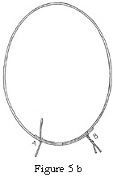1. Marking the headsize for brace position. Mark the head-size for the position of the brace wires, using a pencil on white wire and tailors' chalk on black wire. The first mark is for the back on the lap halfway between the two ends. Divide the headsize in eight sections starting with the tape measure at the back and marking each division as it is reached by the tape line.
Marking for a twenty-five-inch headsize. A twenty-five-inch headsize properly divided will be marked from the back as the starting point 3 1/8 — 6¼ — 9 3/8 — 12½ (center front); 15 5/8 — 18¾ -21 7/8 and 25 (the back). Lap the ends and tie each one to the headsize wire with a 1-inch length of tie wire.
The top headsize may be divided in the same way or only in four equal parts as the braces from the lower headsize will mark the one-eight divisions.
Figure 5b. Tying the Headsize Wire. Note that the tie wire is wrapped twice around the headsize wire and twisted before cutting off the ends.
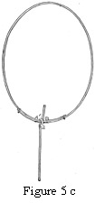To prepare the brace wire, cut eight brace wires 9 inches long and straighten them by running the cushion part (not the tip) of the thumb and forefinger slowly over the length of wire. When all curves have been thus removed, bend 2½ inches from one end at right angles to the other. This bend B marks the position of the lower headsize wire. Place the lower (larger) headsize wire inside one of these wires at its center back, which was the first marked, and twist the brace wire around the back of the upper headsize about ¾ inch above the lower headsize wire and cut it off, leaving only a short end (about 1/8 inch) to bend down. Next, put the front brace wire onto the two headsizes in the same manner, then right and left sides and side-front and side-back wires. To put the back wire on first insures firmness of the lapping, and the front second makes a true division and less confusion in working.
Figure 5c. Placing the First Brace Wire. Note the close wrapping around the headsize wire. The knot must be pinched close with the pliers, A to B, then pinched flat from 1 to 2.
3. Marking 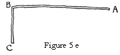the 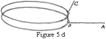brace wires for correct measurements. To mark the brace wires for correct measurements, place the zero end of the tape line at the lower base of the headsize. Measure to the given number and bend wire up at right angles.
Lap the back brace wire over the edge wire joining at the right angle and twist around once; cut off all but 1/8 inch end to bend down flat. Proceed with each brace wire in the same order as that used on the head-size.
Figure 5d. Note the placement of the brace wire on the top and lower headsize wire.
Figure 5e. Brace wire bent ready to put onto the headsize wires.
IV. DIMENSIONS FOR STANDARD HATS
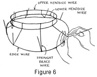The hat illustrated in Figure 6 gives the dimensions for a medium-large mushroom for lace.
Figure 6. Notice the closeness with which the brace wires are wrapped around the headsize and edge wires. The loop must be right before flattening it with the pliers. This means a quick, sharp bend of the brace wire close to the edge wire as is done in Figure 7.
-
MEDIUM ROLLED BRIM
- Top headsize—24½ inches
- Lower headsize—25 inches
- Roll wire—1 inch
- From headsize—29¾ inches
- Front—3¼ inches
- Back—3¼ inches
- Left-side front—3¼ inches
- Right-side back—3¼ inches
- Left side—3¾ inches
- Right side—3¾ inches
- Left-side back—3¼ inches
- Right-side front—3 1/8 inches
- Edge wire—36 inches
MEDIUM SMALL POKE
- Top headsize—22 inches
- Lower headsize—22½ inches
- Front—1¾ inches
- Back—1½ inches
- Left-side front—2 inches
- Right-side back—1 5/8 inches
- Left side—2 1/8 inches
- Right side—2 1/8 inches
- Left-side back—1 5/8 inches
- Right-side front—2 inches
- Edge wire—27¼ inches
CHILD'S POKE
- Top headsize—20½ inches
- Lower headsize—21 inches
- Front—1¾ inches
- Back—1 inch
- Left-side front—2 inches
- Right-side back—1½ inches
- Left side—2½ inches
- Right side—2½ inches
- Left-side back—1½ inches
- Right-side front—2 inches
- Edge wire—30 inches
QUESTIONS
- How is a knowledge of geometry of use in wire-frame making?
- What are the two main uses of wire frames?
- Give the wire-frame uses to be avoided.
- How is the edge-wire measurement determined when the frame is to be made 1 inch smaller?
- How is the edge-wire measurement determined when a brim is to be made 1 inch larger?
- What is the correct order of mounting the brace wires?
- When are many round braces necessary?
- How many round braces are needed for a transparent hat?